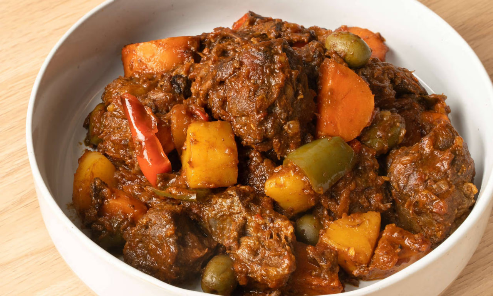

Beef Caldereta
Caldereta is a rich, hearty beef stew with strong Spanish influences, traditionally served during fiestas and special occasions across Luzon and the rest of the country. Historically made with goat meat (kambing), beef has become the more common everyday protein. The dish is characterized by a thick tomato-based sauce enriched with liver spread, which gives it a distinct savory depth. It is typically cooked with potatoes, carrots, bell peppers, and green olives.

Gather
Ingredients
- Beef chuck or brisket, cubed
- Tomato sauce and tomato paste
- Liver spread (like Reno)
- Potatoes and carrots, cubed
- Red and green bell peppers, sliced
- Green olives
- Garlic, minced
- Onion, chopped
- Bay leaves
- Beef broth or water
- Soy sauce, salt, and pepper
- Cooking oil
Make it
Recipe
- Heat oil in a large pot and sauté the garlic and onion until soft.
- Add the beef cubes and cook until browned on all sides.
- Pour in the beef broth (or water) and soy sauce. Add the bay leaves. Bring to a boil, then lower the heat and simmer for 1.5 to 2 hours until the beef is very tender.
- Stir in the tomato sauce, tomato paste, and liver spread. Simmer for 10 minutes to allow the sauce to thicken.
- Add the potatoes and carrots. Cook until the vegetables are tender.
- Stir in the bell peppers and green olives, cooking for a final 3 to 5 minutes.
- Season with salt and pepper to taste. Serve hot with rice.